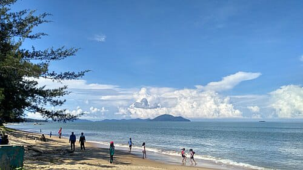

Tiga tempat, tiga suasana
Setiap tempat di bawah ini dikelompokkan menurut perasaan yang paling kuat saat berada di sana.
1. Kawah Wurung, Bondowoso
Suasana: hening dan lapang

Dalam bahasa Jawa, wurung berarti batal. Konon kawah ini tidak jadi terbentuk, dan yang tersisa justru lembah savana luas yang tenang di kawasan Ijen.
- Yang membuatnya unik
- Savana di Pulau Jawa yang sering terasa seperti bukan di Jawa.
- Waktu yang disarankan
- Pagi hari, saat udara sejuk dan cahaya lembut.
- Cocok untuk
- Pejalan yang ingin duduk diam lama-lama.
2. Danau Kaco, Kerinci
Suasana: jernih dan teduh

Danau kecil di kaki pegunungan Kerinci dengan air yang jernih sampai dasarnya terlihat. Warga setempat menjaganya sebagai tempat yang dihormati.
- Yang membuatnya unik
- Warna airnya berubah dari hijau ke biru mengikuti cahaya.
- Waktu yang disarankan
- Pagi saat cerah agar dasar danau terlihat.
- Cocok untuk
- Penyuka suasana hutan dan fotografi air.
3. Pantai Pasir Panjang, Kei Kecil
Suasana: lembut dan terbuka

Pantai di Kepulauan Kei, Maluku Tenggara, dengan pasir putih yang sangat halus dan air laut yang tenang.
- Yang membuatnya unik
- Pasirnya halus seperti tepung dan terasa nyaman diinjak.
- Waktu yang disarankan
- Musim laut tenang, dan sore hari untuk matahari terbenam.
- Cocok untuk
- Pejalan yang ingin laut jernih tanpa keramaian.